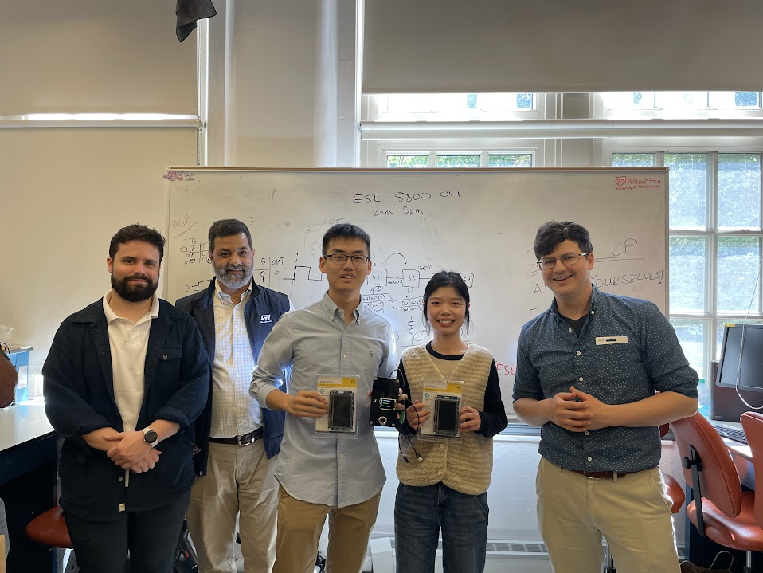

SSAS – Unlock safety, wirelessly
- Team Number: T06
- Team Name: Byte Crafter
- Team Members: Tony Yan & Yue Zhang
- GitHub Repository: ESE5160 Byte Crafter Repo
- Hardware: ROG Zephyrus G14, HUAWEI 14
1. Video Presentation

2. Project Summary
2.1 Device Description
Our device is a smart fingerprint-based door lock that enhances home security using both local authentication and cloud-based controls.
We were inspired by the need for smarter and safer access control, especially in situations where traditional locks are vulnerable to tailgating, coercion, or physical tampering. Our device addresses this by using fingerprint-based authentication, with each user registering both a normal and a duress fingerprint—the latter silently triggers an emergency alert in the cloud. Internet connectivity augments the system with remote unlock and fingerprint management functionality, while a built-in IMU detects tampering attempts and triggers a local alarm for immediate response.
2.2 Device Functionality
The core of our internet-connected smart lock system is built around the SAMW25 microcontroller, which integrates Wi-Fi connectivity and manages interactions between local components and the cloud. This device combines biometric authentication, real-time security feedback, and remote access capabilities to deliver both convenience and safety.
Authentication and Access Control:
The system uses a fingerprint module to distinguish between normal and duress fingerprints. A normal fingerprint grants access and actuates the lock, while a duress fingerprint silently triggers an emergency alert in the cloud. Access can also be controlled remotely through cloud-issued unlock command.
Sensors and Alerts:
An onboard IMU monitors for vibrations or forced movements of the lock. If tampering is detected—such as an attempt to pry open the device—a local buzzer is activated to alert nearby occupants.
Actuators and Mechanism:
The locking mechanism is simulated using a servo motor to represent door opening and closing. This allows for reliable and observable movement in our prototype without requiring a physical lock pin.
User Interface:
A rotary encoder and LCD screen form the local interface. Users can navigate menus to view, register or delete fingerprints. All add/delete actions must be approved by the cloud to prevent unauthorized changes.
Internet-Enhanced Features:
The device connects to the internet to support remote door unlocking, allowing users to control access even when they are not physically present.
To aid in understanding the overall structure and flow of the system, a system-level block diagram is included below, illustrating the interactions among the microcontroller, sensors, actuators, and network interface.

2.3 Challenges
One of our main challenges was hardware-related. Due to manufacturing issues, we ended up with only a single functional customized PCBA, which created both logistical and psychological pressure since our team had two members. Moreover, the SAMW25 chip’s pin assignments conflicted with our PCB layout, so we had to carefully plan our peripheral configurations—reusing the same SERCOM and TCC/TC-compatible pins whenever possible. This allowed us to streamline code portability from the development board to the custom hardware.
A more complex challenge emerged during system integration. After completing the individual modules for sensors and actuators, we encountered pin conflicts—specifically, both the buzzer and servo motor were initially assigned to TCC0, but they required different PWM frequencies. Since reinitializing the PWM mid-operation didn’t work reliably, we had to fully reset TCC0 before switching between them. Additionally, although the datasheet showed that pins PA04 and PA05 supported both TCC0 and TCC3, the ASF Start tool did not offer TCC3 as a selectable option, limiting our flexibility.
An even deeper issue came from managing multiple communication interfaces: UART, SPI (with DMA), and I2C. While the DMA SPI-based communication with the Wi-Fi module was relatively stable, UART and I2C transmissions were frequently interrupted by Wi-Fi activity—causing missed or corrupted data. Combined with instability in our specific Wi-Fi chip version, this made integration and communication timing especially difficult. We addressed this by carefully tuning task priorities and inserting well-calculated task delays to maintain system responsiveness and data integrity.
2.4 Prototype Learning
Throughout the development of our prototype, we realized the importance of thoroughly verifying hardware peripheral support—not just from the datasheet, but also from the actual development tools and software libraries. Early in the project, we assigned both the buzzer and servo motor to TCC0, thinking we could later move one to TCC3 based on the datasheet’s claim that PA04 and PA05 support TCC3. However, we later discovered that TCC3 wasn't actually supported in the ASF4 configuration tools, which forced us to manage both PWM outputs under TCC0. This made the code more complex, as switching between the two required a full reset of the timer. In hindsight, using two distinct timers from the start (e.g., TCC0 and TC3) would have significantly simplified our implementation.
If we were to build this device again, we would explore using DMA-based UART communication instead of interrupt-driven or polling-based methods. Since UART transmissions were frequently interrupted by Wi-Fi activity, using DMA could offload the CPU, reduce latency, and improve communication reliability during periods of high system activity. These changes would simplify code structure, improve system robustness, and make integration more efficient.
2.5 Next Steps & Takeaways
There are two main areas for future improvement. First, while the current implementation displays a warning message in the cloud when a duress fingerprint is used, a more advanced version could trigger automatic emergency responses—such as notifying pre-assigned contacts or even calling for help. Second, the current prototype uses a servo motor to simulate the lock mechanism; to deploy this system in real-world environments, the mechanism could be upgraded to control an actual door lock, which would require mechanical redesign and integration with commercial lock hardware.
ESE5160 offered an in-depth learning experience that combined embedded software development with hardware design and system integration. Through the lectures, we gained practical skills in FreeRTOS-based real-time programming, including task creation, priority management, and inter-task synchronization using semaphores and mutexes. These concepts were reinforced through lab assignments and ultimately applied in our final project. We also learned how to work with complex communication stacks like UART, I2C, and SPI alongside Wi-Fi, gaining insight into how real-world systems must balance concurrency and timing. Additionally, the course introduced us to PCB design using Altium Designer, where we created schematics, laid out custom PCBA, and generated manufacturing-ready files. This hands-on experience bridged the gap between theory and practice and prepared us for real-world embedded system development.
2.6 Project Links
3. Hardware & Software Requirements
3.1 Hardware Requirements
HRS 01: A customized PCB board with SAM W25 microcontroller shall be used for this project.
- Met. We successfully manufactured and used a customized PCB with the SAMW25 as the core controller.
HRS 02: LCD display shall be used for user interface with correct information and the refresh rate of the screen should not be too slow (e.g. 3s), via SPI protocol.
- Met. The ST7735 LCD was connected via DMA SPI. Menu navigation and real-time feedback (e.g., fingerprint registration status, cloud messages) are responsive, with refresh times well below 1 second.
HRS 03: The rotary encoder shall allow the user to navigate the menu on the LCD and select it, through GPIO pins configured for interrupt-driven input.
- Met. The rotary encoder (Adafruit #377) was connected to GPIOs configured with callback. It correctly updates menu selections and registers input events reliably.
HRS 04: The fingerprint module shall achieve greater than 95% correctness within 1 second, via a UART interface.
- Partially Met. Correctness exceeded 95% in controlled tests, but the recognition time sometimes slightly exceeded 1s depending on UART traffic and Wi-Fi and IMU interference.
HRS 05: The IMU shall detect vibrations caused by violent tampering or forced entry attempts, via an I2C interface.
- Met. We set a threshold of 300 for the IMU readings—when the difference between consecutive samples exceeded this value, the buzzer was triggered to indicate potential forced entry.
HRS 06: The buzzer shall be sounded when specific requirements are met, driven via a PWM-capable GPIO pin.
- Met. The buzzer was driven using PWM from a TCC timer (TCC0), and successfully activated when IMU detection was triggered.
3.2 Software Requirements
SRS 01: The LCD shall provide a menu for users to initiate fingerprint add or delete operations, and the cloud shall determine whether the request is permitted by responding with an allow or deny decision.
- Met. Cloud verification and UI flow were validated. Delay may occur under Wi-Fi interference, but functions correctly.
SRS 02: The fingerprint module shall open the lock after the authorized fingerprint be detected.
- Met. The servo motor rotates to unlock after a valid fingerprint match.
SRS 03: The system shall trigger an alarm (buzzer) when IMU detects someone trying to break the lock.
- Met. IMU vibration threshold reliably activates buzzer within detection range.
SRS 04: The system shall send a warning message to the cloud when a duress fingerprint is detected.
- Met. Cloud UI shows red alert and logs duress access events.
SRS 05: The system shall allow users to view fingerprint library both via cloud and LCD.
- Met. LCD displays fingerprint count; cloud UI includes type and total info.
SRS 06: The system shall allow users to open the lock via the cloud.
- Met. Cloud MQTT message triggers servo unlock sequence.
SRS 07: The system shall allow users to add or delete fingerprints via the cloud.
- Met. Cloud decision gating ensures only authorized requests are accepted and processed.
SRS 08: The system shall lock itself automatically 5 seconds after unlocking.
- Met. Auto-lock tested; ±1 second timing accuracy confirmed.
4. Project Photos & Screenshots
Final Project

PCBA
Top View:

Bottom View:

Thermal Camera Image

Altium Board Design
2D View:

3D View:

Node-RED Dashboard
UI Interface:

Backend Flow:

System Block Diagram
Award
5. Codebase
-
💻 View Project GitHub Repo:
https://github.com/ese5160/a14g-final-submission-s25-t06-byte-crafter